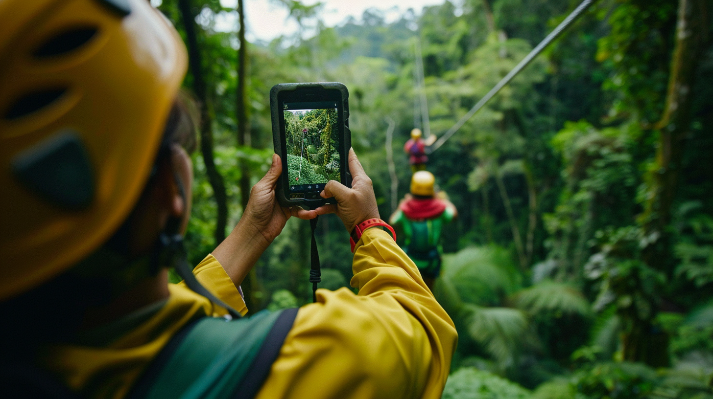

Step into the future of travel with AI's innovative influence on travel planning. Uncover how AI customizes and optimizes travel for a memorable experience.
Artificial Intelligence (AI) is transforming how we plan our trips. No more generic plans or endless searches—now, travel is personal. With recommendations for trips using AI, every adventure is customized to fit your needs, tastes, and real-time changes.
As we look at AI as the future of travel, this technology is poised to revolutionize how we travel, offering tailored itineraries and seamless experiences for all kinds of explorers.
Travel planning has transformed dramatically from manual, time-consuming processes to seamless, AI-driven experiences. Today’s AI trip planners make planning easier, more personalized, and more efficient.
In the past, planning trips meant relying on guidebooks, travel agencies, or advice from friends. This often resulted in overwhelming choices and itineraries that didn’t quite fit. Now, with an AI travel assistant, travelers get instant, tailored recommendations that match their style and budget.
The first wave of digital travel tools made booking easier, but real innovation came with trip planner AI tools. Early AI answered simple questions, but today’s best AI trip planners analyze user preferences, learning from past trips to make smarter, more predictive recommendations.
The future of trip planning revolves around recommendations for trips using AI. These tools predict preferences, suggest ideal destinations, and adjust in real-time as circumstances change, making AI trip planners essential for creating personalized, dynamic travel experiences.
AI systems, like TravelAI, use advanced algorithms to analyze vast data sets, from past travel choices to real-time factors like weather and local events. By processing this data, they create personalized recommendations for trips using AI that fit each traveler’s preferences, streamlining the entire planning process.
A key feature of AI trip planners is their ability to learn from user behavior. If a traveler prefers eco-friendly accommodations, the AI will adjust future recommendations accordingly. Systems like TravelAI continuously refine their suggestions, making trip planning more personalized and accurate with each use.
Data privacy is a priority for AI travel assistants. Platforms like TravelAI employ encrypted storage and give users control over their information, ensuring that while personalizing recommendations, data remains secure.

The magic of AI lies in its ability to analyze vast amounts of data and create recommendations for trips using AI that match individual preferences.
AI systems like TravelAI gather data from several sources to personalize travel recommendations:
Once data is collected, AI trip planners analyze it to reveal patterns. The system can identify user preferences, such as a love for cultural destinations or food-centric travel, and create itineraries that fit these tastes. The best AI trip planner doesn’t just recommend a destination—it curates a full experience, including where to stay and what to do, based on each traveler’s style.
One of the standout features of AI travel assistants is their ability to adjust in real time. For example, if a beach destination experiences bad weather, the AI might suggest alternative activities or recommend a new location altogether. This flexibility ensures that travelers enjoy seamless, personalized experiences that adapt to the unexpected.
To illustrate how this works, here’s a typical AI decision-making process for a trip:
This process demonstrates how AI can create a highly personalized travel plan that not only meets the user’s stated preferences but also aligns with their implicit preferences and adapts to real-world conditions.
Feedback is crucial for improving recommendations for trips using AI. Platforms like TravelAI rely on user ratings, reviews, and behavior to refine suggestions, creating more personalized trips with each use.
Traveler feedback forms the backbone of AI-driven trip planning. Every review or rating helps AI travel assistants like TravelAI identify patterns and improve future recommendations. For example, popular hidden attractions can be incorporated into personalized recommendations for trips using AI, making future itineraries even more customized.
AI systems employ various methods to collect user feedback:
Once collected, feedback helps refine the AI’s algorithms. Tools like TravelAI use machine learning to adjust their future suggestions based on real-world outcomes. For instance, if a user frequently rates boutique hotels highly, the trip planner AI will prioritize similar accommodations in the future.
This feedback loop ensures that AI systems are always evolving, making travel planning more personalized and efficient over time.
AI has transformed how we plan trips. Tools like TravelAI provide faster, more accurate recommendations for trips using AI, matching user preferences and making the process efficient.
AI trip planners boost satisfaction by recommending accommodations, activities, and destinations based on past behaviors. From boutique hotels to hidden attractions, AI travel assistants personalize each trip to align with the traveler’s unique interests.
Traditional trip planning takes hours, but AI travel guides save time by offering instant, personalized suggestions. Tools like TravelAI analyze preferences, travel history, and real-time data, helping users plan and book efficiently, and optimizing both time and budget.
AI systems like TravelAI don’t just suggest popular spots—they uncover hidden gems tailored to each traveler’s interests. With recommendations for trips using AI, travelers can experience unique, lesser-known opportunities that go beyond the ordinary.
AI-powered travel planning has proven its effectiveness through real-world examples. Tools like TravelAI offer customized recommendations for trips using AI that adapts to each traveler’s needs. Let’s look at some examples of how AI trip planners have transformed travel experiences.
Sarah, an art history professor, used TravelAI to plan a culturally rich trip to Italy. After analyzing her preferences for smaller cities and Renaissance art, the AI suggested lesser-known destinations like Urbino and Ferrara, avoiding the typical tourist crowds. It even timed her visit to coincide with an art exhibition in Urbino, enhancing her experience. Thanks to recommendations for trips using AI, Sarah enjoyed a tailored trip that exceeded her expectations.
The Johnson family wanted a mix of adventure and relaxation on their vacation. Using TravelAI, the AI crafted an itinerary that balanced activities like ziplining with beach relaxation. When bad weather hit, the AI quickly adapted, suggesting alternative indoor activities like a cooking class. This flexibility demonstrated the value of using AI travel assistants to make real-time adjustments for a seamless experience.
Alex, a last-minute solo traveler, turned to TravelAI for help planning his trip to Japan. The AI analyzed his preference for unique experiences and suggested a stay in a traditional ryokan and participation in a local festival. With recommendations for trips using AI, Alex was able to discover hidden gems and enjoy a personalized itinerary that catered to his spontaneous travel style.
These case studies illustrate how AI-driven travel planning can create highly personalized, adaptable, and memorable travel experiences across a range of travel styles and preferences.
While AI trip planners like TravelAI offer many advantages, concerns around data privacy, security, and algorithmic bias must be addressed to maintain a balance between personalization and safeguarding user data.
Data privacy is a key concern with AI. Platforms like TravelAI use personal data to generate recommendations for trips using AI while prioritizing security through encrypted storage, transparent policies, and user control. This ensures that travelers’ data remains protected, while still offering personalized trip suggestions.
AI tools can sometimes inherit bias from historical data. TravelAI and similar AI travel assistants work to reduce bias by using diverse data sets and reviewing algorithms regularly, ensuring fair and inclusive recommendations for all users.
Though AI provides tailored recommendations, it can limit spontaneous experiences. To counter this, AI trip planners like TravelAI introduce surprises, allowing travelers to explore new activities or destinations beyond their usual preferences. This keeps trips both personalized and open to discovery.
AI technology continues to evolve, introducing new trends that make tools like TravelAI even more powerful in providing recommendations for trips using AI.
Here are some key trends shaping the future of travel planning:
These advancements promise to make travel planning not just easier, but more intuitive, immersive, and aligned with individual needs and values.
The development of AI-driven travel planning relies heavily on strategic partnerships across industries. Tools like TravelAI enhance their recommendations for trips using AI by collaborating with various sectors, from travel companies to academic institutions.
AI trip planners like TravelAI work closely with airlines, hotels, and tour operators to provide up-to-date availability, pricing, and exclusive deals. These partnerships ensure that AI travel assistants offer the best options for travelers, making trip planning smoother and more accurate.
Collaborations with universities and research institutions help AI platforms like TravelAI stay at the forefront of innovation. These partnerships focus on improving applied AI machine learning algorithms and exploring new ways to refine AI trip planners, ensuring that the technology continues to advance.
AI in travel planning also benefits from partnerships beyond the travel industry. Collaborations with technology providers, data aggregators, and even health companies allow platforms like TravelAI to expand their capabilities, offering travelers more comprehensive and personalized services.
These partnerships drive the continuous improvement of AI travel guides, ensuring that travelers receive more precise, real-time recommendations for trips using AI.
For travelers new to using AI-driven tools, getting started with platforms like TravelAI is simple. Whether you’re seeking recommendations for trips using AI or looking for a highly personalized itinerary, following these steps will help you maximize the benefits of AI travel assistants.
When selecting an AI trip planner, prioritize platforms like TravelAI that offer deep personalization, user-friendly interfaces, and strong privacy measures. Ensure the tool integrates well with other services like hotel booking and flight comparison.
To get accurate recommendations for trips using AI, set up your preferences carefully. Include details such as your travel style, activities, and budget. AI tools like TravelAI analyze these inputs to tailor destinations and itineraries that match your needs.
After your trip, provide feedback to help AI trip planners refine future suggestions. By rating accommodations and activities, you enable TravelAI to improve its recommendations, ensuring a more personalized experience next time.
With these steps, travelers can easily tap into the power of AI travel guides, making trip planning faster, more efficient, and highly personalized.
AI-driven tools like TravelAI have revolutionized how we plan our trips, offering highly personalized recommendations for trips using AI. With features like predictive analytics and real-time adjustments, AI trip planners provide a level of customization that was once unimaginable.
By using AI travel assistants, you can streamline your travel planning, discover unique experiences, and ensure each trip aligns with your preferences. Whether it’s a solo adventure or a family getaway, trip planner AI tools like TravelAI make your journey smoother and hassle-free.
As AI continues to evolve, it promises even more intuitive, custom-crafted travel experiences. Now is the time to embrace the future of travel with AI.